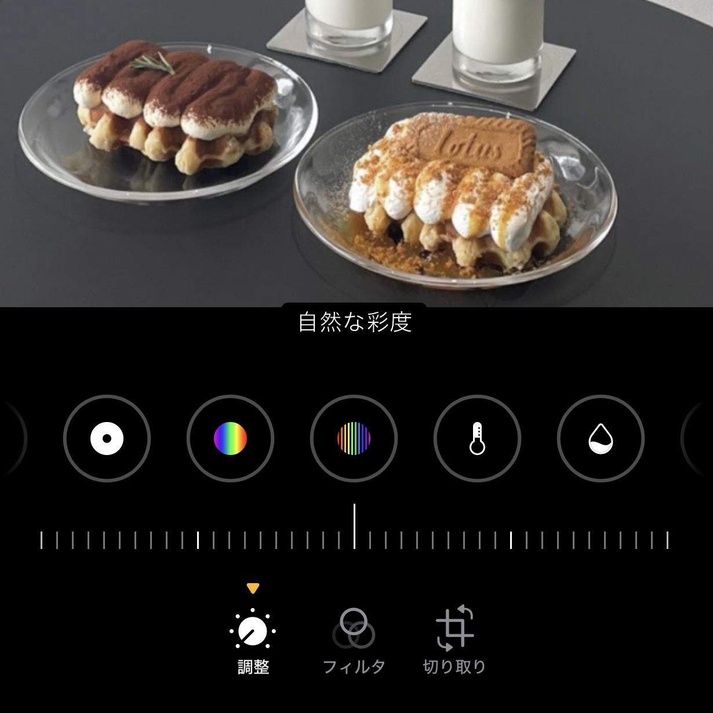

Point1
画面サイズを意識する
投稿にしたいのかストーリーにしたいのか、用途に合わせて映りを意識する
point! > ストーリー → 9:16 / 投稿 → 1:1(スクエア)比率によってかなり印象が変わる
Point2
食べ物の位置を意識する
食べ物を画面中央or画面下方に配置すると食べ物を主役にしつつ、おしゃれなカフェの内装も映すことができる
point! > 設定＞カメラ＞グリッドをON グリッド線を活用黄色の枠内に食べ物が配置されているのが理想的
Point3
人も写してみる
食べ物を手で持ったり、写真を撮る友達を写したりすることでオリジナリティ溢れる写真を撮ることができる
point! > 自分の手が好きじゃなくても後から加工できるので積極的に写すことが重要Point4
自分の投稿の系統を理解する
寒色、暖色かを大まかに把握しておくことだけでも系統を揃えられる
point! > 自分の過去の投稿をチェック
左の画像は周りが寒色なのに対して撮った写真が暖色のため、食べ物の写真だけ浮いて見えている。 対して左の画像は、写真も周りも暖色であるため馴染んでいるように見える。
Point5
色味補正を活用する
Point4で把握した色の系統に合わせた色味補正を行う
point! > 基本カメラに入っている調整とフィルタを使用中央の画像が元の画像、左の画像は寒色系統に合わせて加工したもの右の画像は暖色系統に合わせて加工したもの
大して差はないように見えるが、他の投稿と並んだ際に系統に合っていないと浮いて見えてしまう


露出・ハイライト・明るさ・自然な彩度・暖かみを調節する
寒色の場合は、モノのフィルターを軽くかけ、暖色の場合はドラマチック（暖かい）をかける
Point6
背景をぼかす
基本カメラの機能ポートレートを活用する
point! > 後ろに人が写ってしまう時や、背景がごちゃごちゃしている時におススメ.jpg)
背景が見えにくくなって食べ物に目線がいくようになる